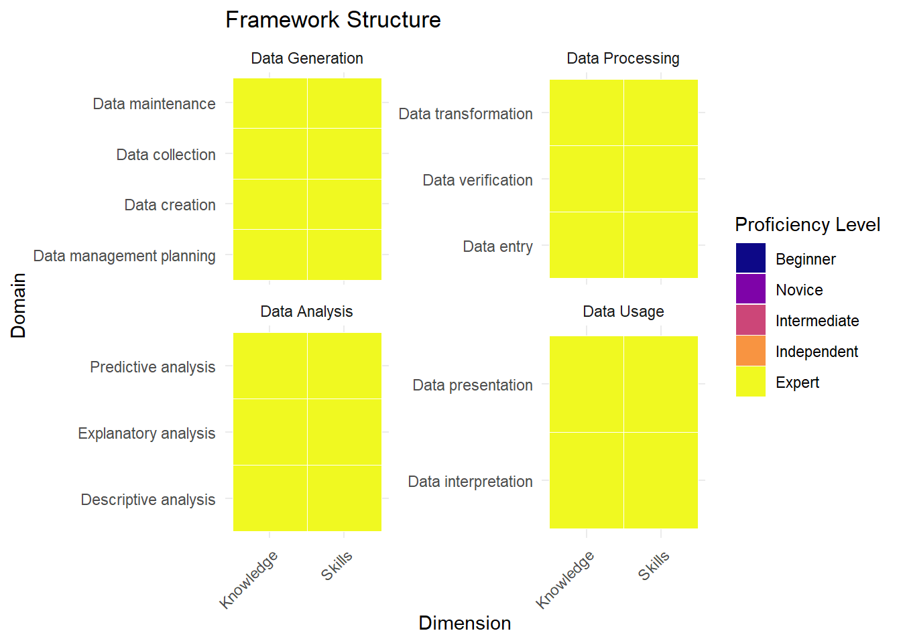
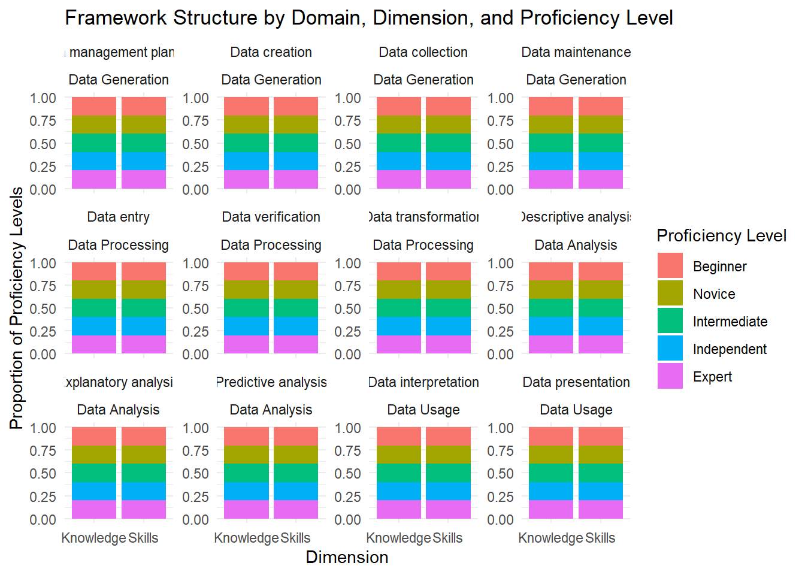
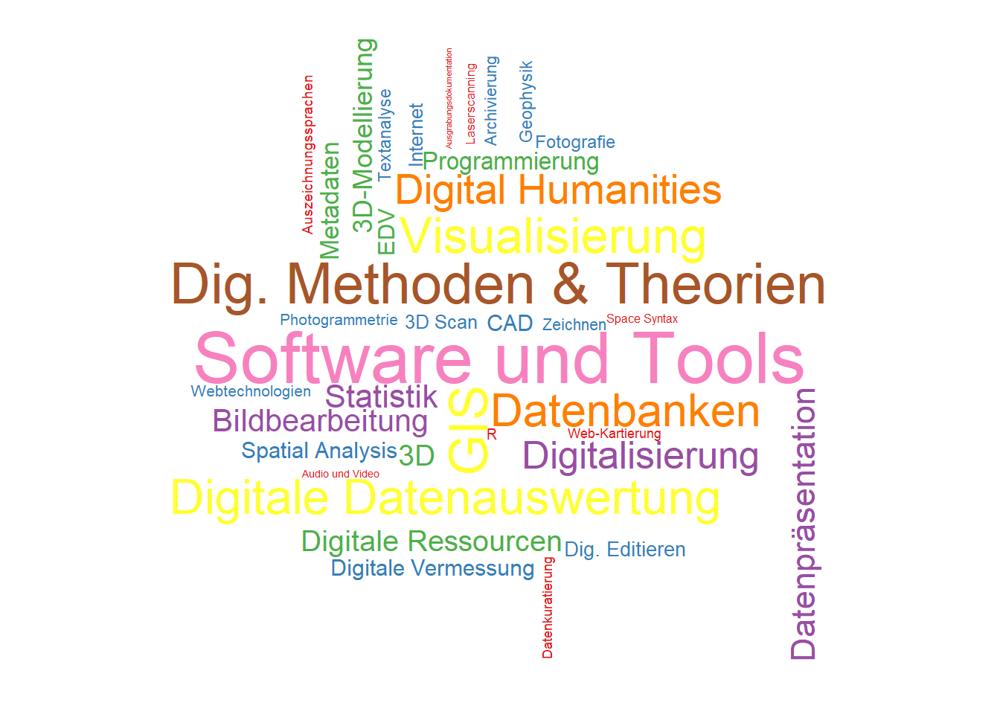

- Competency area 1: Data Generation - Competency area 2: Data Processing - Competency area 3: Data Analysis - Competency area 4: Data Usage


 Henrike Backhaus2,
Kai-Christian Bruhn2,
Tim Klingenberg1
Henrike Backhaus2,
Kai-Christian Bruhn2,
Tim Klingenberg1
1 Institut für Archäologische Wissenschaften, Ruhr-Universität Bochum
2 Hochschule Mainz, Mainz University of Applied Sciences
3 Archäologisches Institut, Universität zu Köln



NFDI4Objects Task Area 6 “Commons and Qualification” aims to define a Research Data Management Competency Framework (NFDI4Objects-RDMCF) that address the particularities of dealing with data regarding the study of the past through its material remains. The NFDI4Objects-RDMCF is to be offered to the broader community of practitioners, instructors and managers as reference and recommendation.
At this point, we offer a tentative framework structure derived from a comparative synthesis of existing frameworks and the scope of a sample of courses lectured in Germany, between winter 2014/15 and summer 2023, based on IANUS (Lehrangebote) dataset. The further development and fine-tuning of competency domains and profiles will be perform with direct feedback from other activities and experts in the NFDI4Objects consortium.
The development process and documentation of the NFDI4Objects-RDMCF is kept as a HTML Quarto Book in perpetual beta state.
We call any NFDI4Objects participant or community member interested in contributing to access the repository, register and engage!

- Competency area 1: Data Generation - Competency area 2: Data Processing - Competency area 3: Data Analysis - Competency area 4: Data Usage